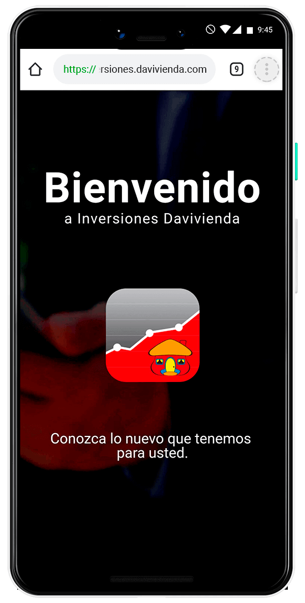
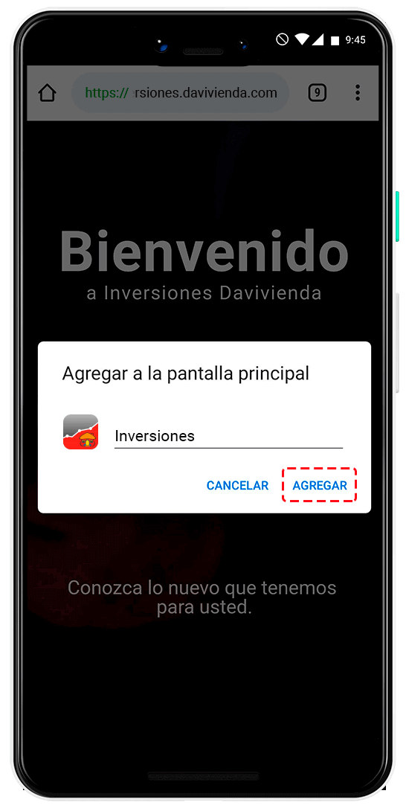
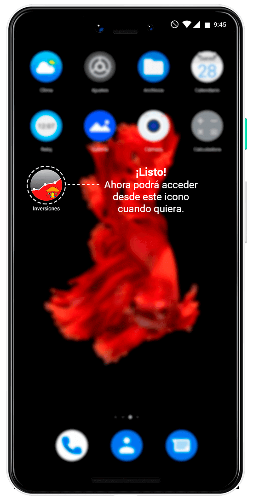
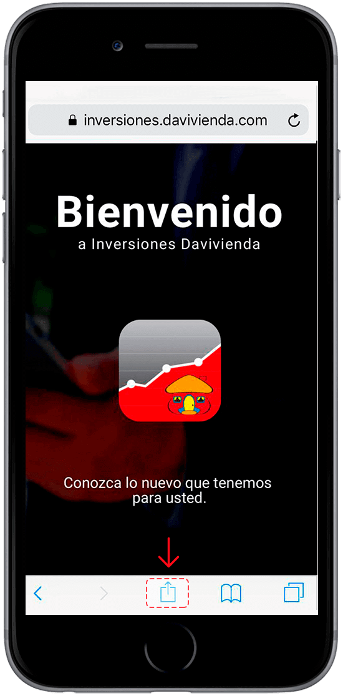
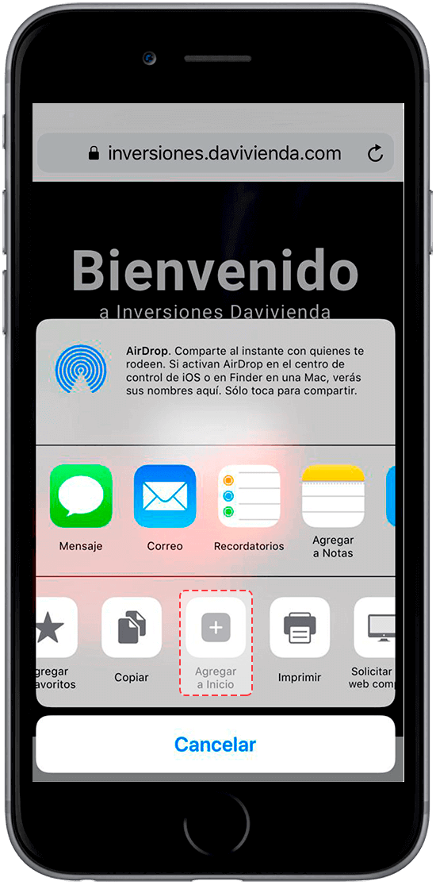

Bienvenido a
Inversiones Davivienda.
Inversiones Davivienda.
Para acceder a la nueva experiencia de Inversiones Davivienda
siga estos pasos:
Paso 1:
Despliegue el menú del navegador.Resaltado con el marco de color rojo. 
Paso 2:
Seleccione la opción Agregar a la pantalla principal.
Paso 3:
Agregue el icono a la pantalla principalde su celular. 
Paso 4:
Ahora empiece a usar Inversiones Davivienda desde el icono y conozca todos sus beneficios. Ahora ingrese con su usuario,
Tenga en cuenta que para poder realizar esta acción debe hacerlo desde el navegador Safari.Para acceder a la nueva experiencia de Inversiones Davivienda
siga estos pasos:
Paso 1:
Seleccione el menú del navegador.Resaltado con el marco de color rojo. 
Paso 2:
Seleccione la opción Agregar a inicio. Paso 3:
Agregue el icono a la pantalla de iniciode su celular.